固定のTier表ではなく、
あなたの条件で変わるランキング
あなたの育成条件に合わせて
最適なサポートカードを
見つけよう！
育成プラン・行動回数・Vo / Da / Viの優先順位を入力するだけ。あなたの条件に合わせてサポートカードをランキングします。
今すぐランキングを計算する
FEATURES主な機能
-
プロデュース条件を入力
育成プラン、優先パラメータ、行動回数を設定します。
-
サポートカードを計算
初期評価・イベント効果と6つの効果をもとに、条件別の評価値を算出します。
-
Vo / Da / Viを比較
各パラメータの上昇値を個別に計算します。
-
優先順位でランキング
第一優先、第二優先の順番で比較してランキングします。
RANKINGランキングについて
ランキング計算画面の構成
左側で育成条件を入力し、右側に2種類のランキングを表示します。
- 優先パラメータランキング：第一優先 → 第二優先 → 総合評価 → カードIDの順で比較
- 総合評価ランキング：Vo + Da + Vi の合計が高い順
- カード詳細：カードを選ぶと初期評価・イベント効果と6つの効果の内訳を表示
評価方法
- 1入力した行動回数と、効果の最大発動回数を比較します。
- 2小さいほうを実際の発動回数とします。
実際の発動回数 = MIN(行動回数, 最大発動回数) - 31回あたりの上昇値を掛けます。
上昇値 = 実際の発動回数 × 1回あたりの上昇値 - 46つの効果の上昇値を Vo / Da / Vi 別に合計します。
- 5カードの初期評価（例：Vo +65）とイベント効果は、行動回数に関係なく1回だけ固定で加算します。
総合 = Vo + Da + Vi - 6優先順位（第一優先 → 第二優先）または総合評価でランキングします。
HOW TO USE使い方
-
STEP 1
育成条件を入力
育成プラン、Vo / Da / Viの第一優先・第二優先、各行動の回数を入力します。
-
STEP 2
ランキングを計算
「ランキングを計算する」ボタンを押すと、選んだプランのカードがランキング表示されます。
-
STEP 3
評価と内訳を確認
カードを選ぶと、Vo / Da / Vi・総合の評価値と、初期評価・イベント効果・6つの効果の内訳を確認できます。
FAQよくある質問
このツールは何をするものですか？
入力した育成プラン・行動回数・パラメータ優先順位をもとに、サポートカードの効果によるVo / Da / Viの上昇値を計算し、ランキング形式で表示するツールです。固定のおすすめ表ではなく、条件を変えるとランキングも変わります。
ランキングはどのように計算されますか？
カードの6つの効果それぞれについて「実際の発動回数 = MIN(入力した行動回数, 最大発動回数)」を求め、1回あたりの上昇値を掛けて、対象パラメータ（Vo / Da / Vi）ごとに合計します。カードの初期評価（例：Vo +65）とイベント効果は、行動回数に関係なく1回だけ固定で加算します。総合評価は Vo + Da + Vi です。優先パラメータランキングは第一優先 → 第二優先 → 総合評価 → カードIDの順で比較します（重み付けの合算はしません）。総合評価ランキングは総合評価の高い順で、同値の場合はカードID順です。
育成プランによってランキングは変わりますか？
変わります。選択した育成プラン（センス / ロジック / アノマリー）に対応するカードだけがランキングの対象になります。
カードの効果はどこで確認できますか？
ランキング計算画面でカードを選ぶと、ランキングの下にカード詳細が表示され、初期評価・イベント効果と、6つの効果それぞれの効果種類・対象・最大発動回数・実際の発動回数・上昇値を確認できます。なお、現在登録されているカードは動作確認用のサンプル（ダミー）データで、実際のゲームのカード・効果ではありません。
スマートフォンでも利用できますか？
はい。スマートフォンでは入力欄とランキングが縦に並び、行動回数は「＋」「－」ボタンでも入力できます。表は横にスクロールして確認できます。
NOTES注意事項
- 本ツールは非公式のファンツールです。ゲームの公式運営が提供・監修するものではありません。
- 現在登録されているサポートカードは、動作確認用のサンプル（ダミー）データです。実際のゲームのカード名・効果・数値ではありません。
- 初期版は、すべてのカードを完凸状態として計算します。
- 計算結果は入力条件とデータに基づく目安であり、ゲーム内の実際の結果を保証するものではありません。